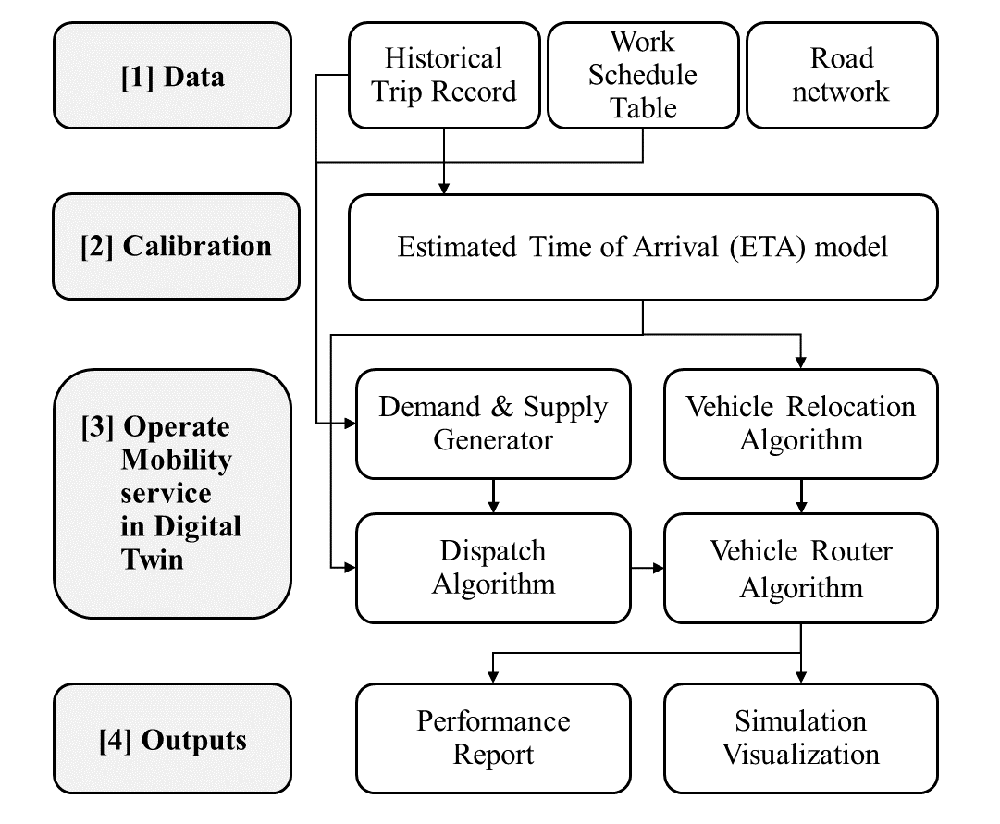

1. Introduction#
1.1 Urban Mobility Simulation이란#
Urban Mobility Simulation은 도시의 교통 및 이동 시스템을 가상으로 모델링하고 시뮬레이션하는 기술이다. 이는 실제 도시 환경에서 다양한 교통 수단과 사람들의 이동 패턴을 컴퓨터상에서 재현하는 것을 목표로 한다.
현실 세계에서 다양한 모빌리티 서비스를 테스트하는 것은 비용, 이해관계 충돌, 안전 문제 등으로 인해 불가능하다. 따라서 로보틱스 분야에서 사용되는 OpenAI gym, Mujoco와 같은 가상 환경처럼 모빌리티 시스템 운영에 특화된 가상 환경을 만들 필요가 있다.
1.2 시뮬레이션 구축 동기#
새로운 모빌리티 시스템을 테스트할 수 있는 플레이그라운드가 없다는 점이 주요 연구 질문이 되었다. 현재 여러 가상 환경이 존재하지만 모빌리티 시스템 운영에 적합하지 않다. 예를 들어, 테슬라의 자율주행 시뮬레이션은 자율주행 차량과 로봇 훈련을 위한 디지털 트윈에 중점을 둔다. VISSIM, SUMO, AIMSUN과 같은 교통 시뮬레이션 도구들은 확장성 문제로 인해 대규모 도시 수준의 차량 운영에는 적합하지 않다. 서울이나 뉴욕과 같은 대도시 수준의 택시나 UAM 서비스를 구현할 수 있는 도구가 현재로서는 없다.
1.3 Mobility Simulation Framework#
이러한 문제를 해결하기 위해 DTUMOS(Digital Twin for Urban Mobility Operating System)라는 프레임워크가 개발되었다. DTUMOS는 도시 모빌리티 운영 시스템을 위한 디지털 트윈으로, 경량화되고 오픈소스 기반의 프레임워크이다. 이 시스템은 모든 기능을 개별 모듈로 분리하여 높은 확장성과 유연성을 제공한다. 머신러닝 서버, 스토리지, 시뮬레이션 시각화, 배차 알고리즘, 수요 및 공급 생성기, 차량 라우터 등 다양한 모듈로 구성되어 있다.
DTUMOS는 고속 및 효율적인 운영을 위해 다양한 오픈소스 도구와 알고리즘을 활용한다. 예를 들어, ML 기반 ETA 모델, Google OR-Tools, OSRM, React, Deck.gl 등을 사용한다. 이 프레임워크의 모든 모듈은 새로운 것으로 유연하게 전환 및 업데이트될 수 있어, 다양한 모빌리티 시스템 연구와 운영에 적용될 수 있다.
{kind=link}
[Framework of Mobility Simulation]